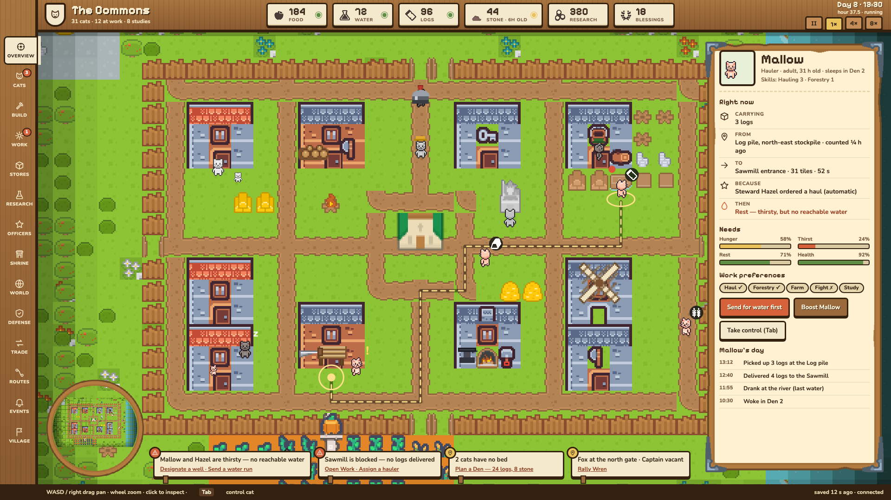
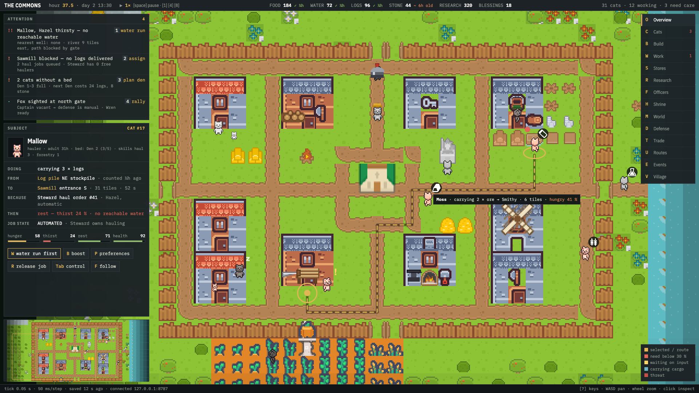
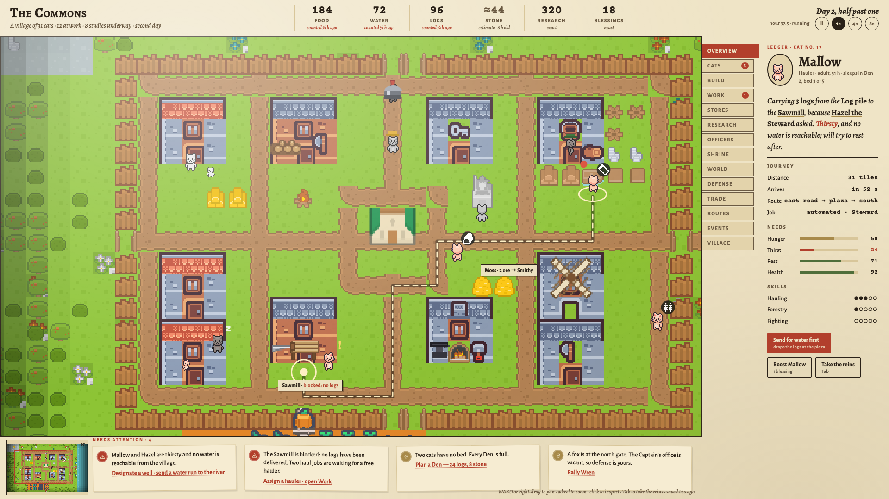
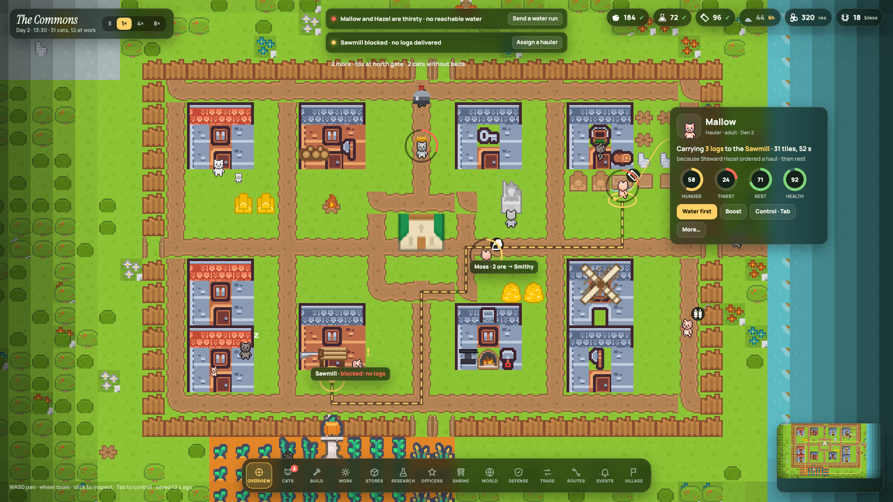
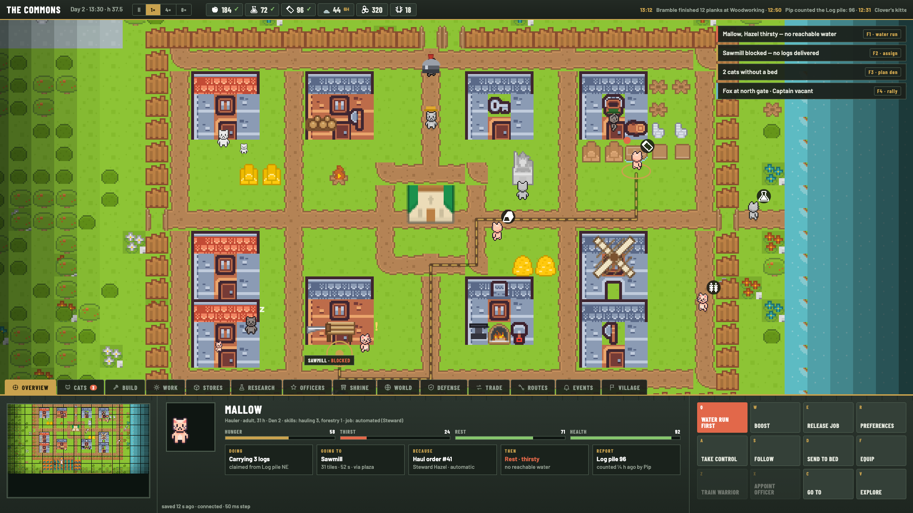

Same colony, same moment (The Commons, day 2, Mallow selected while hauling logs to a blocked Sawmill). Only the chrome changes.

Carved wood rail and parchment panels built from the tracked Adventure UI pack. Cozy, chunky, matches the pixel world.
Pixelify Sans + Nunito · bark, plank, parchment, moss, ember

Dense, keyboard-first, every action has a key. Closest to the current dark HUD, but with a causal DOING / FROM / TO / BECAUSE / THEN block.
IBM Plex Mono + Plex Sans Condensed · slate, amber

Vellum margins around a framed map; a book-style thumb index; a "ledger line" that tells the subject's story in one sentence; wax-sealed attention notes.
Alegreya + Alegreya Sans + Courier Prime · vellum, ink, madder, moss, brass

Almost no chrome: glass pills, a round dock, and an inspector card tethered to the selected cat. Needs shown as rings on the cats.
Manrope + Instrument Serif · frosted green glass, sun yellow

Classic RTS console: minimap, subject panel with five labelled cells, and a 4 × 3 command grid with hotkeys. Category tabs ride the console's top edge.
Barlow Condensed + Barlow · olive steel, brass
It is the only one that changes the game's voice, not just its skin. Light margins make the dark forest pop; the ledger line answers "what, where, carrying, why, next" in two seconds; the thumb index fixes the scrolling nav at every width; the notes carry their own next action. It borrows the Overseer's density for the list sheets and the Clearing's in-world markers for the map.
Trade-off: fixed margins cost about 37 % of a 1920 × 1080 window. Direction 4 shows the most world; Direction 2 packs the most facts.